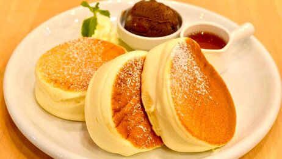

Japanise Pancake
Bahan:
- 2 telur
- 1 ½ sdm susu cair
- 1/4 sdt vanila
- 35 gr tepung terigu protein rendah
- ½ sdt baking powder
- 2 sdm atau 25 gr gula pasir
- 1 sdm minyak untuk melapisi teflon
Cara Membuat:
- Pisahkan putih telur dan kuning telur.
- Kemudian kocok lepas (mixer) kuning telur.
- Masukan susu cair dan tambahkan perasa vanila, mixer hingga rata.
- Masukan (ayak) tepung terigu dan beking powder, lalu tambahkan sejumput garam.
- Mixer adonan hingga rata jangan terlalu lama.
- Panaskan teflon dengan api kecil agar panasnya merata di seluruh permukaan teflon.
- Kemudian mixer putih telur hingga sedikit berbusa.
- Masukan gula pasir sedikit demi sedikit hingga mengembang kaku.
- Campurkan sedikit adonan putih telur ke adonan kuning telur, aduk rata menggunakan whisk/spatula secara perlahan.
- Masukan adonan kuning telur ke adonan putih telur lalu aduk perlahan hingga rata.
- Olesi teflon dengan sedikit minyak kemudian tuang adonan masing-masing 3 sendok makan.
- Lalu tutup teflon dan tunggu selama 2 menit.
- Kemudian tambahkan adonan lagi 1 sedok makan.
- Tutup kembali selama 4 menit.
- Balik pancake dan tunngu selama 4 menit.
- Setelah matang tambahkan toping sesuai selera.